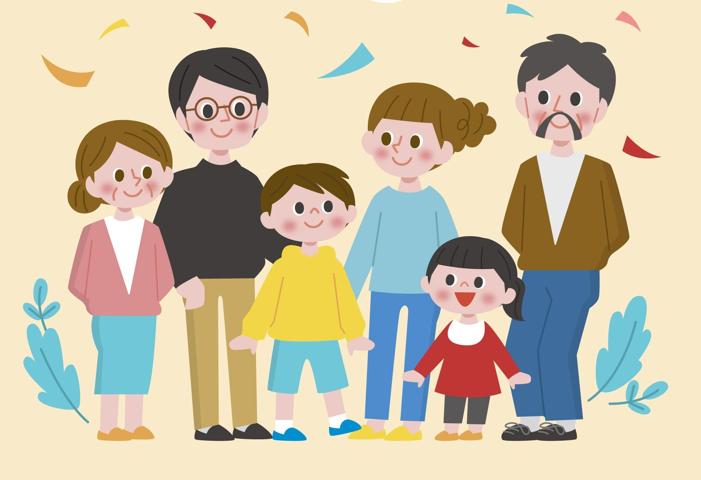

Bentuk-bentuk diffresiasi sosial

Diferensiasi Ras : Diferensiasi ini melibatkan pengelompokan masyarakat berdasarkan ciri fisik seperti warna kulit, bentuk wajah, dan warna rambut.
Diferensiasi Etnis (Suku Bangsa): Etnis atau suku bangsa merupakan kelompok yang dibedakan dari kelompok lain karena memiliki ciri dasar yang berkaitan dengan asal-usul, tempat asal, dan budaya.
Diferensiasi Agama: Agama merupakan sistem kepercayaan dan praktik yang berkaitan dengan hal-hal suci. Di Indonesia, terdapat beberapa agama seperti Islam, Kristen, Katolik, Hindu, Budha, Konghucu, dan berbagai aliran kepercayaan lain.
Diferensiasi ekonomi: Penggolongan kasta sosial bedasarkan kemampuan ekonomi dan penghasilannya
Selain itu, terdapat juga jenis diferensiasi sosial lainnya, seperti diferensiasi tingkatan, diferensiasi fungsional, diferensiasi berdasarkan jenis kelamin, dan diferensiasi kultural
Apa itu Diffrensiasi Sosial?
Diffrensiasi sosial Diferensiasi sosial merujuk pada proses atau hasil pembentukan perbedaan-perbedaan antara individu atau kelompok dalam masyarakat. Proses ini mencakup perkembangan variasi dalam hal status, peran, atau karakteristik sosial. Diferensiasi sosial bisa berkaitan dengan berbagai aspek kehidupan masyarakat, termasuk ekonomi, pendidikan, agama, etnisitas, dan lainnya.
Proses diferensiasi sosial dapat terjadi secara alami sebagai respons terhadap kebutuhan dan tuntutan masyarakat. Misalnya, dalam masyarakat yang kompleks, orang-orang cenderung mengambil peran-peran yang berbeda sesuai dengan spesialisasi keterampilan atau pekerjaan tertentu. Proses ini dapat membentuk struktur sosial yang lebih kompleks dan hierarkis.
Penyebab Diffrensiasi Sosial
ekonomi: Perbedaan dalam kepemilikan sumber daya ekonomi, seperti kekayaan, pendapatan, dan kesempatan ekonomi, dapat menyebabkan diferensiasi sosial.
Keterikatan Emosional: Terdapat keterikatan emosional antara anggota kelompok, terutama dalam kelompok primer seperti keluarga atau teman dekat. Keterikatan ini menciptakan rasa kebersamaan, loyalitas, dan perhatian terhadap kepentingan bersama.
Norma dan Nilai Bersama: Kelompok sosial memiliki norma-norma (aturan perilaku yang diharapkan) dan nilai-nilai (keyakinan bersama) yang menjadi dasar untuk mengarahkan tingkah laku anggotanya. Norma dan nilai ini menciptakan konsistensi dalam perilaku kelompok.
Tujuan Bersama: Sebagian besar kelompok memiliki tujuan atau kepentingan bersama yang ingin dicapai. Tujuan ini dapat berkisar dari tujuan sosial, ekonomi, hingga tujuan rekreasi, tergantung pada jenis kelompoknya.